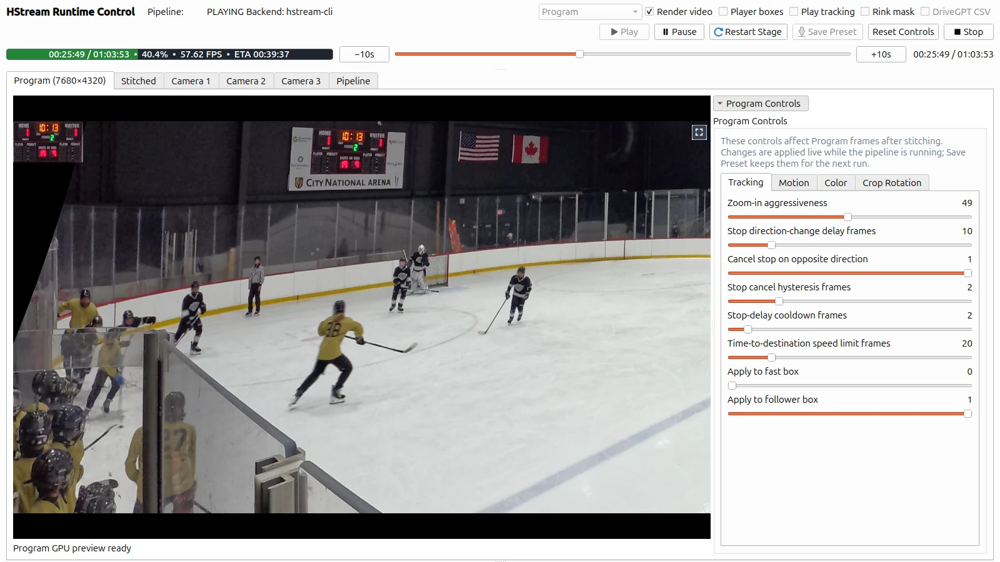
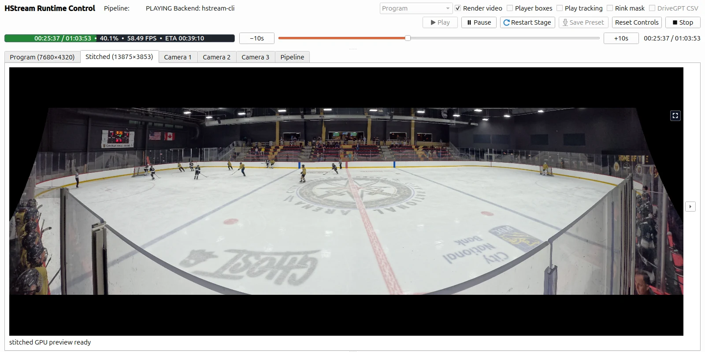
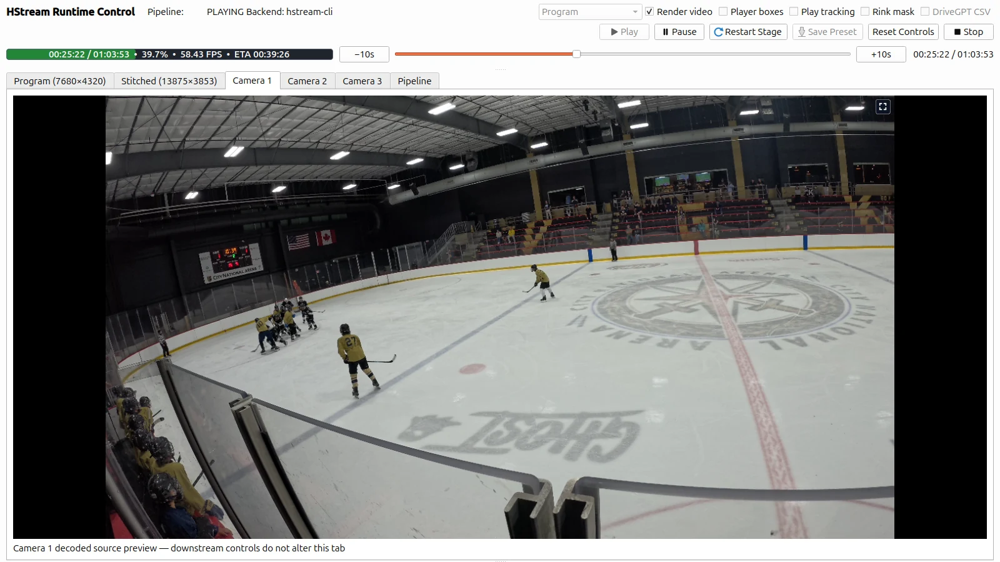
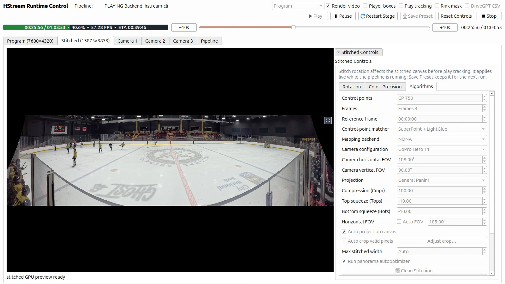

{kind=link}
{kind=link}
{kind=link}
{kind=link}
1
Synchronize and stitch
Read recordings from GoPro, Insta360, or other camera layouts. Calibrate overlap and blend the inputs into a single wide panorama.
No subscription · source available · self-hosted
HockeyMONStream stitches multiple fixed-camera recordings into a wide view, tracks the play, and drives a virtual pan-and-zoom camera—on hardware you control.

Inside the desktop UI
See actual play from later in vegas-kings-1, using General Panini mapping, adjusted rink leveling, and a custom crop. Switch between the program feed, stitched panorama, and source cameras as the video plays.
Select any screenshot to view it at full size.

The Stitched tab shows the combined camera view, so you can inspect the overlap, rink alignment, and framing during playback.
Watch the program feed while adjusting zoom and tracking behavior with the controls beside the preview.

Open a camera tab to inspect its original view alongside the program and panorama tabs.

Keep the projection, field of view, and crop settings beside the stitched preview. Stop playback to adjust the geometry and framing for the next run.
From fixed views to a program feed
Built for youth hockey and adaptable to other sports, HockeyMONStream combines the expensive-looking parts of automated production in an inspectable C++ and GPU pipeline.
Read recordings from GoPro, Insta360, or other camera layouts. Calibrate overlap and blend the inputs into a single wide panorama.
Run object detection and tracking on the stitched view. A configurable virtual camera follows action while damping jitter and empty-rink drift.
Create an archive with audio, add scoreboard graphics, preview locally, or route the program output through RTMP and RTSP.
Built for tinkerers and teams
The source, configuration, inference plumbing, calibration, and output routing are available to inspect. Permission to modify or redistribute varies by file; review the licensing notices first.
Feature matching, homography fitting, projection-aware calibration, masking, and GPU blending for wide sports views.
Configurable follower boxes, zoom behavior, direction changes, seeking, and per-frame play-tracker telemetry.
NVIDIA DeepStream, GStreamer, CUDA, TensorRT, and ONNX keep the steady-state video path on the GPU.
Camera directories and common action-camera chapter naming are discovered without manually concatenating every clip.
Losslessly remux an archive with audio, render a preview, or send video to file, RTMP, and RTSP sinks.
Use the desktop runtime control application or invoke the pipeline directly for scripted processing and experiments.
Self-hosted vs. hosted systems
People researching Pixellot, Hudl, Veo, or another automated sports camera often need either a turnkey service or a platform they can change. HockeyMONStream serves the second need.
| Consideration | HockeyMONStream | Typical hosted service |
|---|---|---|
| Software cost | No HockeyMONStream subscription fee | Commercial pricing varies |
| Operation | Self-hosted on supported NVIDIA hardware | Vendor-managed appliance or cloud |
| Source and algorithms | Available in the repo; file-level terms vary | Usually proprietary |
| Setup experience | Technical; bring cameras, GPU, and DeepStream | Usually designed for turnkey operation |
| Best fit | Developers, researchers, and DIY teams | Organizations buying a managed product |
This is a category-level comparison, not a claim of feature parity. HockeyMONStream is independent of Pixellot, Hudl, and Veo.
Ready to experiment?
Packages are available for Ubuntu, NVIDIA Jetson, and Windows 11 via WSL 2.
Frequently asked questions
HockeyMONStream has no subscription fee and makes its pipeline source available, but the repository has mixed file-level licensing and is not entirely under an OSI open-source license. It is a self-hosted option in the same broad automated sports-video category, not a drop-in replacement or a claim of feature parity. The project is not affiliated with those companies.
Yes. The current pipeline discovers recordings from two cameras, synchronizes them, calibrates their overlapping views, and creates a wide panorama.
Object detections feed a configurable play tracker. The tracker controls a cropped program view, including virtual pan and zoom behavior, while the original panorama remains available in the pipeline.
The bundled models and defaults target ice hockey. The GStreamer pipeline is modular, so developers can replace models, masks, camera geometry, and tracking configuration for other rink, court, or field sports.
An NVIDIA GPU environment with the matching CUDA, TensorRT, and DeepStream dependencies is required. See the release and build notes for Ubuntu, Jetson, and Windows through WSL 2.